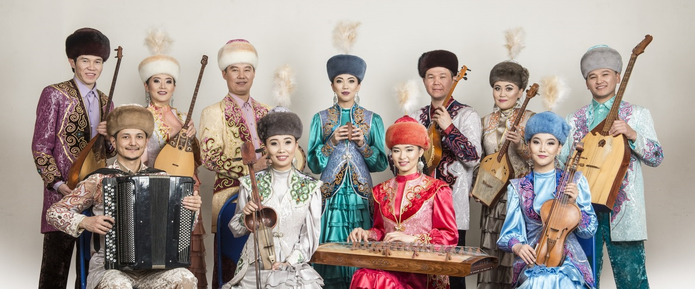
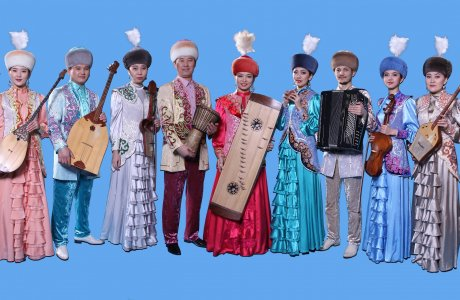
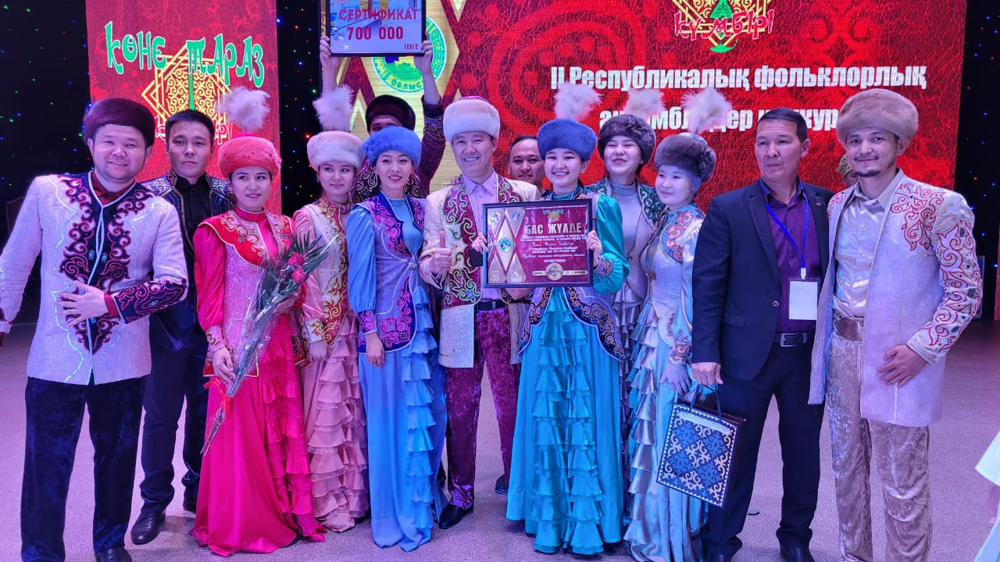
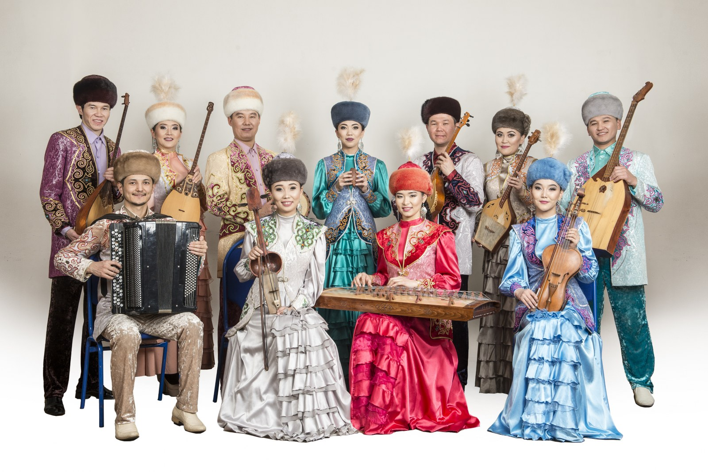
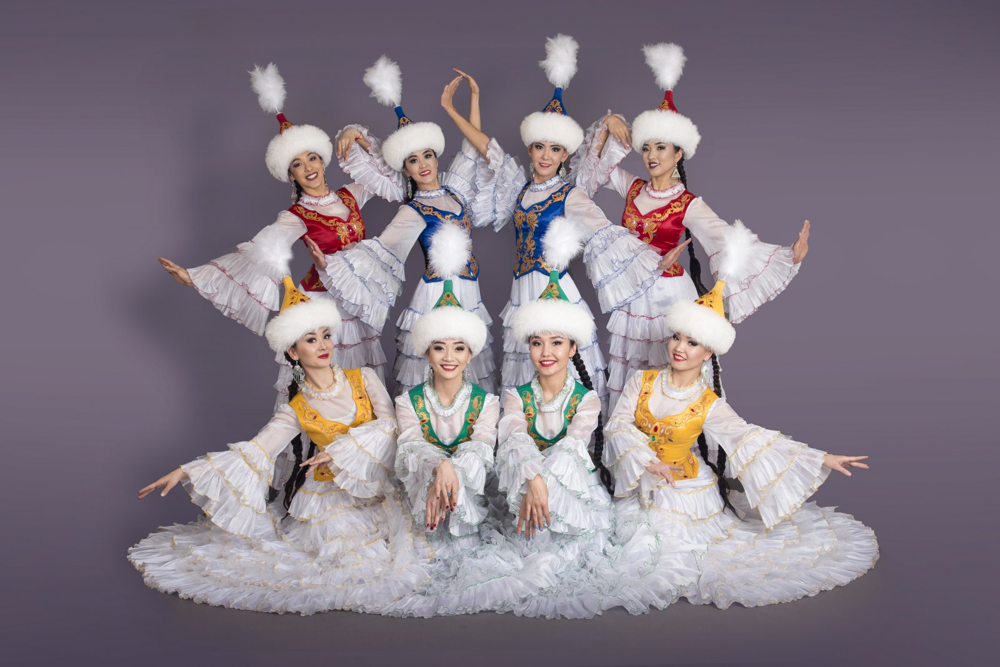
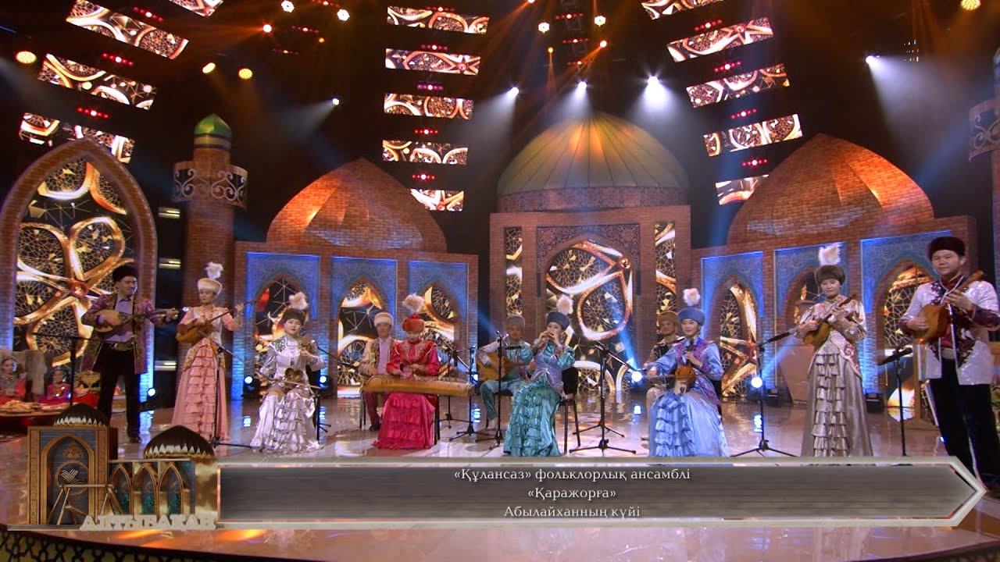
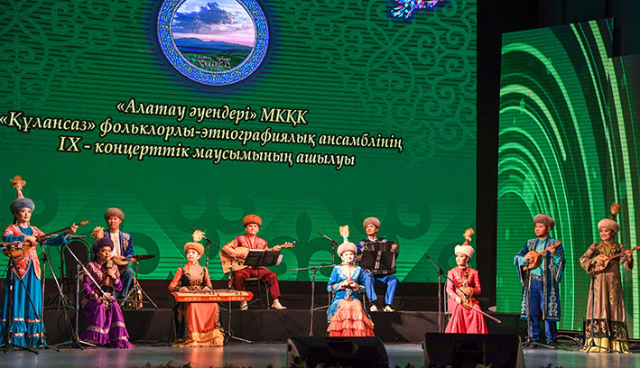

«Құлансаз» фольклорлық этнографиялық ансамблі
Қазақстан Республикасының Халық әртісі, композитор Ә. Бейсеуов 1979 жылы «Құлансаз»
фольклорлық этнографиялық ансамблін ұйымдастырды. 2010 жылы Алматы облысының бұрынғы әкімі
С. Үмбетов пен Талдықорған қаласының әкімі М. Бигелдиевтің бұл істі қолға алып, Қазақстан
Республикасының еңбек сіңірген әртісі Е. Қосбармақов және Қазақстан Республикасының мәдениет
қайраткері М. Жалбыровтар «Құлансаз» фольклорлы этнографиялық ансамбльдің қайта жаңғыруына
тікелей себепкерлері болды.
Ансамбльге «домбыра», «шертер», «бас домбыра», «жетіген», «адырна», «шіңкілдек», «қылқобыз», «нарқобыз», «саз сырнай», «уілдек», «сыбызғы», «сырнай», «дауылпаз», «дабыл», «аса таяқ», «тұяқтас», «қоңырау» және тағы да басқа аспаптарда ойнайтын республиканың түкпір-түкпірінен жиналған талантты жастардан құрды.
Фольклорды этнографиялық ансамбльдің негізгі бағыт-бағдары қазақ халқының ұлттық-дәстүрлі, фольклорлық әуендерін, әндерін, күйлерін, билерін Қазақстанда ғана емес, Корея, Қытай, Ресей, Германия, Польша, Америка, Сербия, Венгрия, Түркия, Өзбекстан және Қырғызстан елдерінде кеңінен насихаттауда.
Ансамбльге «домбыра», «шертер», «бас домбыра», «жетіген», «адырна», «шіңкілдек», «қылқобыз», «нарқобыз», «саз сырнай», «уілдек», «сыбызғы», «сырнай», «дауылпаз», «дабыл», «аса таяқ», «тұяқтас», «қоңырау» және тағы да басқа аспаптарда ойнайтын республиканың түкпір-түкпірінен жиналған талантты жастардан құрды.
Фольклорды этнографиялық ансамбльдің негізгі бағыт-бағдары қазақ халқының ұлттық-дәстүрлі, фольклорлық әуендерін, әндерін, күйлерін, билерін Қазақстанда ғана емес, Корея, Қытай, Ресей, Германия, Польша, Америка, Сербия, Венгрия, Түркия, Өзбекстан және Қырғызстан елдерінде кеңінен насихаттауда.
Қыпың





